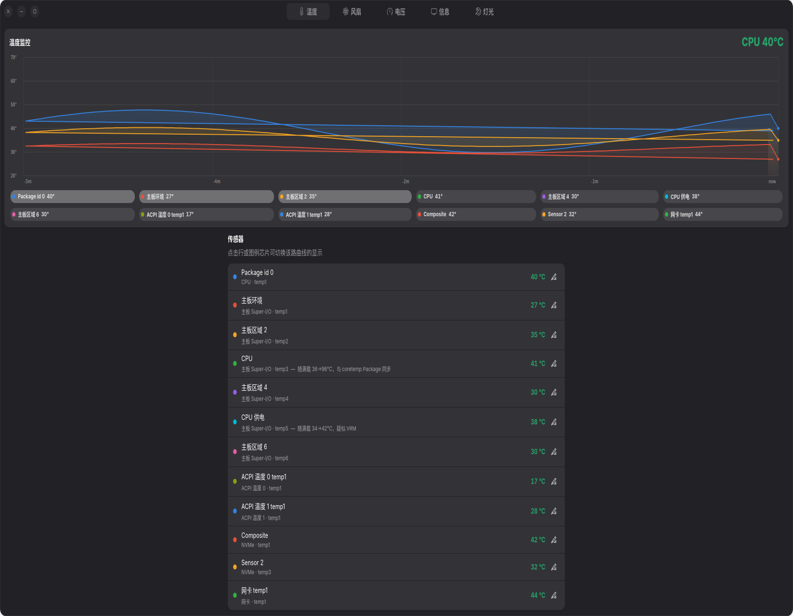
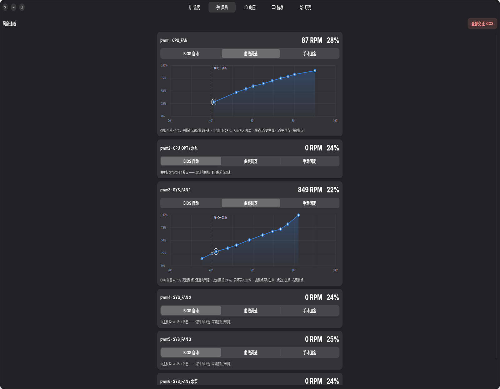
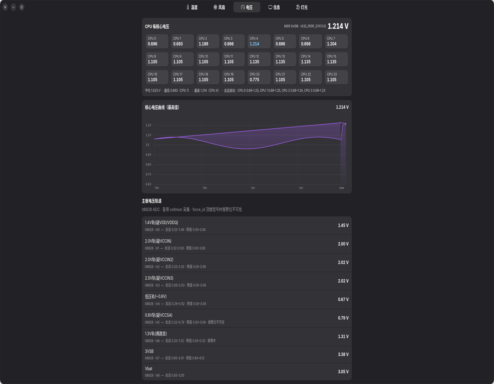
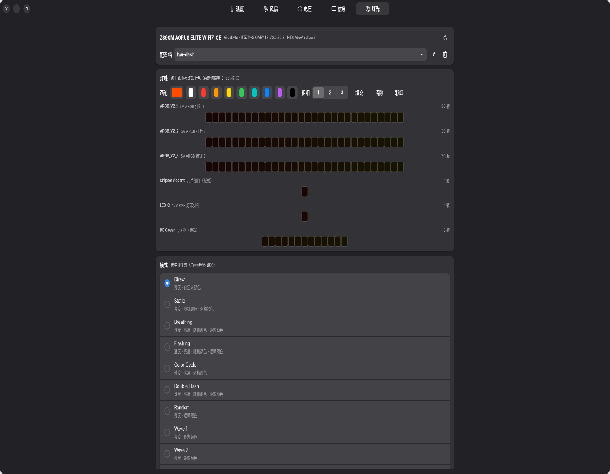
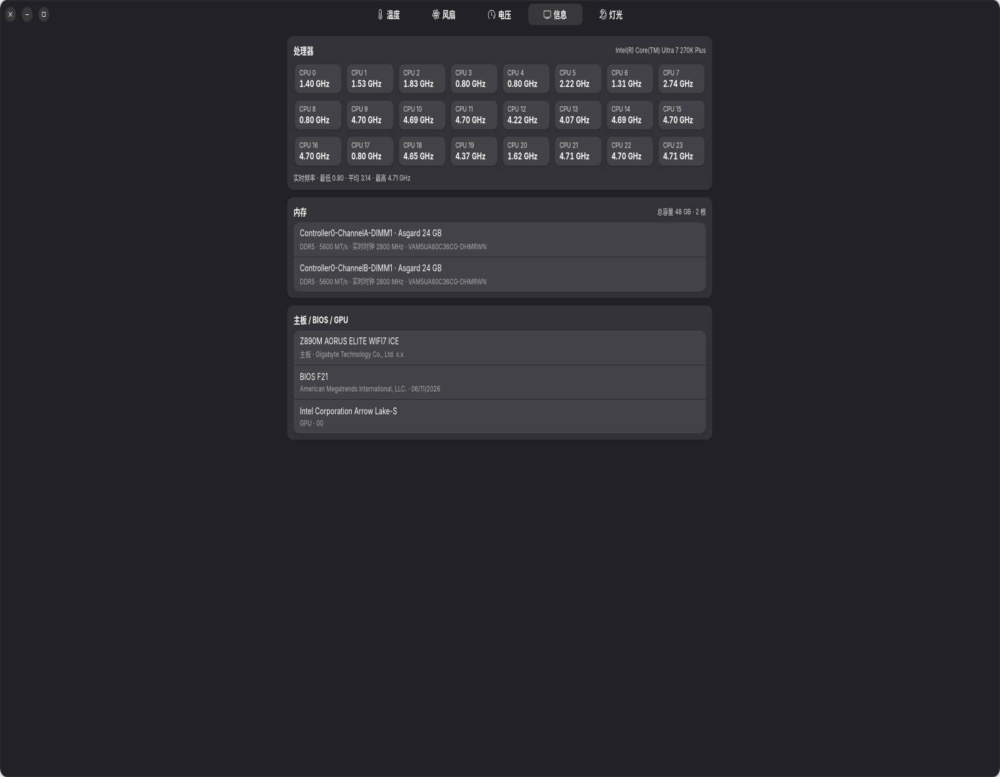

HARDWARE PANEL · OPEN SOURCE
硬件面板 hw-dash
for Linux 的原生 GTK4 硬件监控与控制面板：温度曲线、风扇曲线调速、
每核心电压、系统信息、OpenRGB 灯光 —— 五页一屏，2 秒轮询，界面永不冻结。
A native GTK4 desktop panel (not a web app) that monitors temperatures, edits fan curves
by dragging anchors, reads per-core voltages straight from the CPU, and drives OpenRGB
lighting — all on Linux.
🐧 for Linux
GTK4 · libadwaita
Python 3
Wayland / X11
OpenRGB SDK
systemd
五页全览 · Five pages





🌀 风扇：图上直接拖曲线
- 卡片式通道列表（CPU_FAN / 水泵 / SYS_FAN…），实时转速与占空比
- 曲线模式：左键拖锚点、空白点击加锚点、右键删除；拖动中 250ms 节流即时下发，转速实时跟随
- 距当前温度最近的锚点画亮圈——它决定此刻的转速
- 手动模式拉滑块恒速；BIOS 模式一键交还主板
- it87 驱动「Device or resource busy」自动重断言与限频自愈；守护进程退出时自动把 PWM 交还 BIOS
⚡ 电压：读 CPU 自己报的数
- 每核心电压：逐逻辑 CPU 读
MSR 0x198（IA32_PERF_STATUS，分辨率 1/8192 V），与 HWiNFO / XTU 同源 - 24 块核心瓷砖 + 当前最高核高亮 + 会话 min/max 汇总 + VCore 5 分钟曲线
- 主板电压轨道：Super-I/O 全部 ADC 通道，带会话区间、芯片限值与报警标注
- 实测定案：主板 SIO 上并没有 VCore 轨道（本机三态交叉验证），面板明确标注每条轨道的真实语义
🎨 灯光：OpenRGB 交互范式
- 纯 Python 实现 OpenRGB SDK 客户端（协议 v3 控制通道 + v6 配置档通道），零第三方依赖
- 模式列表按设备 flags 动态生成参数区：颜色数组、速度 / 亮度滑杆、方向
- 逐颗渐变编辑器：画笔 / 彩虹 / 清除一键填充，150ms 节流批量下发，自动切入 Direct 模式
- Direct 模式亮度真正可用：按亮度系数缩放灯色重发（可逆、不叠加），修复了控制器对灯条忽略 brightness 的固有行为
- 配置档保存 / 加载 / 删除，与 OpenRGB 官方 profiles 完全兼容
🌡️ 温度与 💻 信息
- 渐变填充曲线大图、可点击图例芯片、传感器限值与状态色
- 每逻辑 CPU 实时频率瓷砖；内存条插槽/厂商/容量/实时时钟频率；主板 / BIOS / GPU 概览
🏗️ 架构
- 界面与硬件分离：GTK4 界面（普通用户）+ systemd 守护进程（root：MSR / sysfs PWM / SDK），HTTP 本机通信
- 界面崩溃或重启都不影响风扇与灯光的既有策略
- 全部 SDK / HTTP 调用在工作线程执行，界面零卡顿
📦 安装
git clone https://github.com/kanghelyu/hw-dash.git ~/Applications/hw-dash # 先试运行（daemon 不在线也能看温度） python3 ~/Applications/hw-dash/hwdash.py # 安装守护进程（编辑 hwdashd.service 里的 YOUR_USER 与路径后） sudo cp hwdashd.service /etc/systemd/system/ sudo systemctl daemon-reload && sudo systemctl enable --now hwdashd
📄 许可证：PolyForm Noncommercial 1.0.0 —— 严格不可商用：个人学习、自用、修改、分享完全自由；
任何以商业利益或金钱补偿为主要目的的使用需另行获得书面授权。非传染性：修改版无强制开源义务，保留声明即可。
/ License: PolyForm Noncommercial 1.0.0 — strictly non-commercial, non-copyleft.